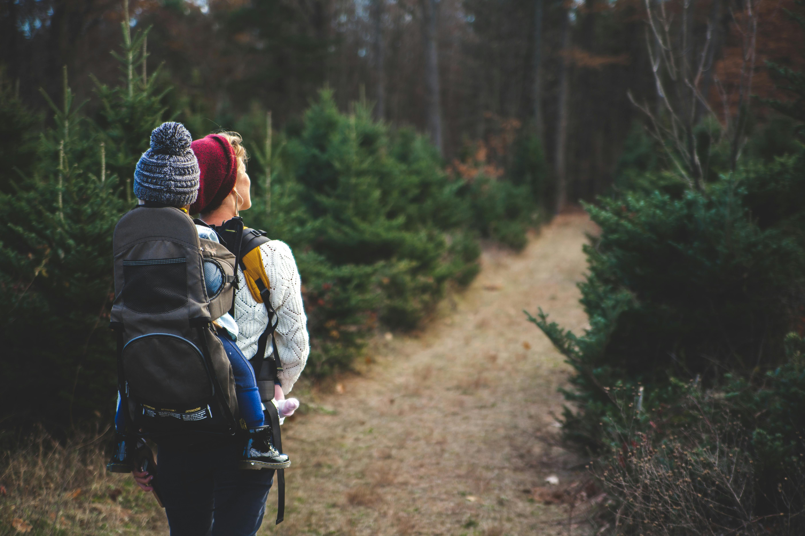

Voyagez à travers vos souvenirs et ceux de vos proches,
Découvrez ou redécouvrez vos parcours et inspirez-vous pour vos propres aventures.





Capturez et partagez vos moments de voyage préférés avec notre site.
Ajouter, modifier, commenter, évaluer et redécouvrir vos voyages.

Retracer vos plus belles visites
et revivez les au travers de vos albums